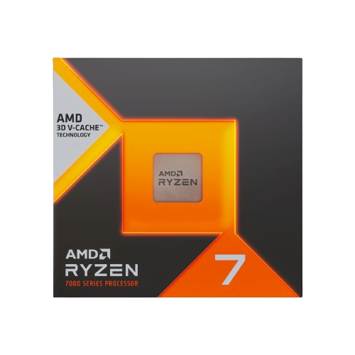
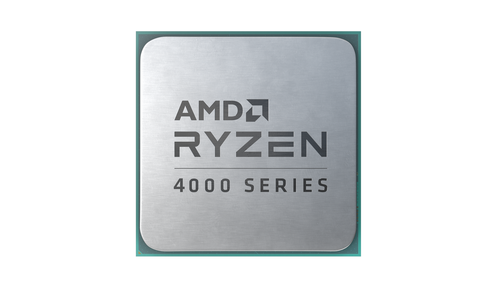
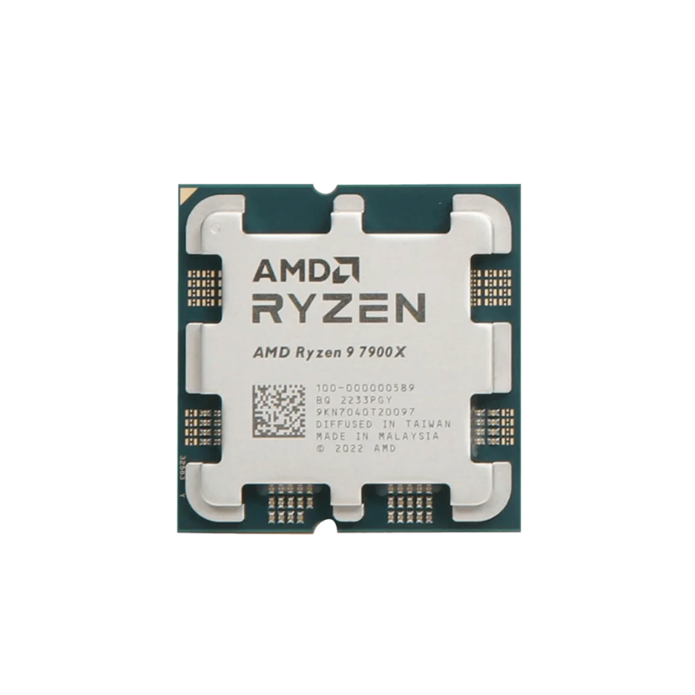
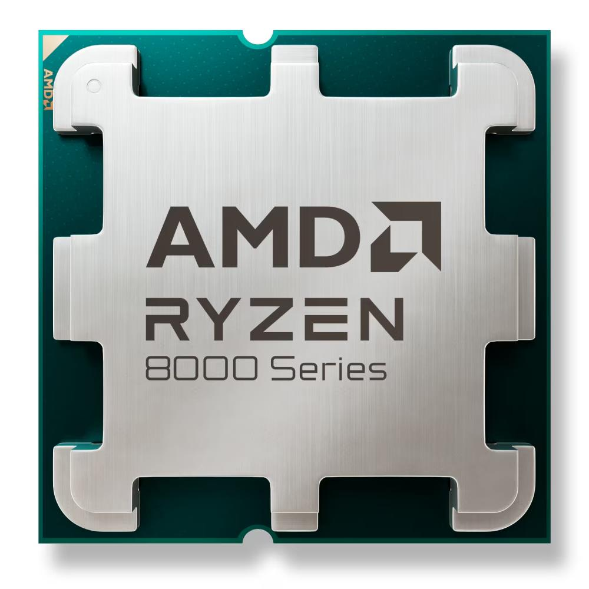
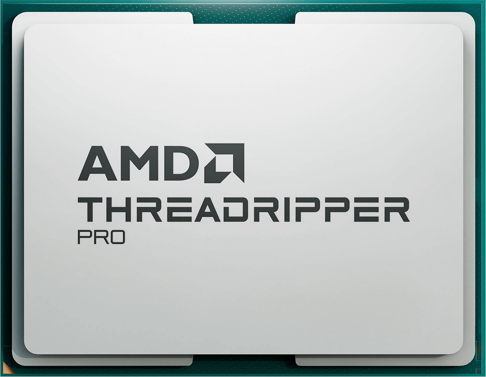
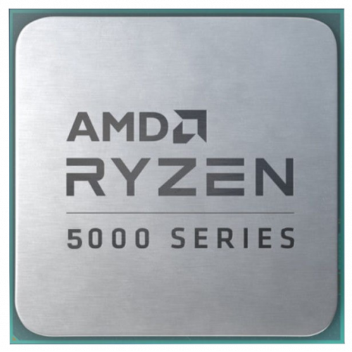

Processeurs AMD Ryzen™
Les nouveaux processeurs

AMD Ryzen™ Master : Des performances personnalisées en un clic avec précision Boost Overdrive, ou bien manuellement

AMD EXPO11, 12 : L'overclocking de mémoire accélère votre expérience de gaming avec sa mémoire DDR5 haute vitesse et la prise en charge PCIe® 5.0.

AMD 3D V-Cache™ : Le matériel de gaming ultime, avec 144Mo de mémoire puce et est disponible sur les processeurs AMD Ryzen Série X3D13

AMD Ryzen Série G : Dotés des meilleurs coeurs graphiques, elle vous permet de jouer à presque n'importe quel jeu PC en haute définition sans acheter de carte graphique.

AMD Ryzen™ 9 : Le processeur prêt pour l'IA pour les PC les plus performants du monde.

AMD Ryzen™ 7 : Un processeur de gaming qui propose un rapport qualité/prix exceptionnel avec 8 coeurs, permet l'overclocking et est doté du refroidisseur AMD Wraith Prism avec éclairage LED RVB.

AMD Ryzen™ Threadripper™ : ce processeur pro offre des performances et des capacités éprouvées pour permettre aux artistes, architectes et ingénieurs d'en faire plus en moins de temps.

AMD Ryzen™ 5 5500GT : intègrent 6 coeurs incroyables pour ceux qui cherchent une expérience de gaming parfaite.